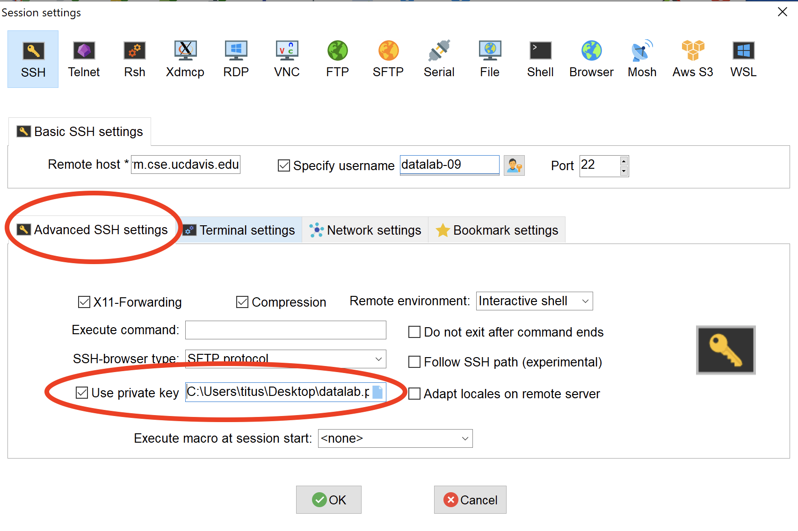
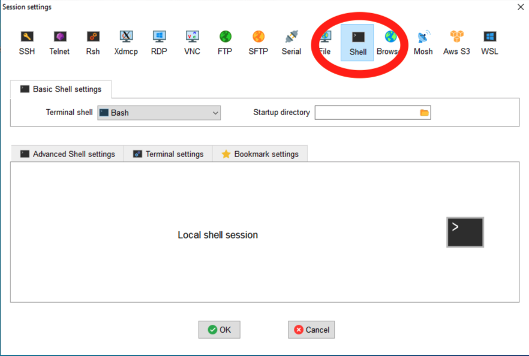

4 Running programs on remote computers and retrieving the results
This two hour workshop will show attendees how to use remote computers to run their analyses, work with the output files, and copy the results back to their laptop and desktop computers. We will discuss input and output formats, where files are usually read from and written to, and how to use the ssh software to copy files to and from remote computers.
In workshop 4, we will do more with running remote commands, getting files onto your remote system, file permissions, and actually working effectively on remote systems. We will also talk a bit about processes and other aspects of multiuser systems.
4.1 Using SSH private/public key pairs
Today we’re going to start by using a different way to log in - ssh key pairs.
Key pairs are a different way to provide access, and they rely on some mathematical magic called asymmetric cryptography or public-key cryptography (see wikipedia). (The details are far beyond the scope of this lesson, but it’s a fascinating read!)
There are two parts to key pairs - the private part, which you keep private; and the public part, which you can post publicly. Anyone with the public key can challenge you to verify that you have the private key, and only the person with the private key can verify, so it’s a way to “prove” your identity and access. (The same idea can be used to sign e-mails!)
Key pairs solve some of the problems with passwords. In brief,
- they are (much!) harder to guess than passwords.
- key pairs enable programs to do things without you having to type in your password.
- the private part of a key pair is NEVER shared, unlike with passwords where you have to type the password in.
- but the public part of pair can be shared widely.
Because of these features, some systems demand that you use them. Farm is (usually) one of them; we have a special exception for the datalab-XX accounts, because key pairs are a confusing concept to teach right off the bat.
4.2 Mac OS X and Linux: Using ssh private keys to log in
Your private key for your datalab-XX account is kept in .ssh/id_rsa.
We need to copy it locally to make use of it.
Run the following command in your Terminal window:
cd ~/
scp datalab-XX@farm.cse.ucdavis.edu:.ssh/id_rsa datalab.pemand then
chmod og-rwx datalab.pem(we’ll explain the second command below!)
datalab.pem is your private key pair!
Now, to log into farm using the key pair, run
ssh -i datalab.pem datalab-XX@farm.cse.ucdavis.eduand voila, you are in!
(VICTORY!)
You’ll need to keep track of your datalab.pem file. I recommend keeping it in your home directory for now, which is where we downloaded it.
4.3 Windows/MobaXterm: Using ssh private keys to log in
For MobaXterm, connect as you did in workshop 3 and download .ssh/id_rsa to some location on your
computer, named datalab.pem.
Now, create a new session and go to “Advanced SSH options” and select it the private key pair (see screenshot).

Now connect.
Voila! No password needed!
VICTORY!!
Note that if you change the location of your private key file, you’ll need to go find it again :).
4.4 Some tips on your private key
NEVER SHARE YOUR PRIVATE KEY.
We’ll talk more about private key management in the future, but the basic idea is that you should create a new private key for each computer you are using, and only share the public key from that computer.
4.5 Working on farm
So farm is a shared computer with persistent storage (which is typical of a remote workstation or campus compute cluster (HPC). This means a few different things!
Let’s start by logging back into farm. (You got this!)
4.5.1 First, download some files:
Let’s make sure you have the right set of files from the last workshop – this will take the set of files here and make them appear in your farm account:
cd ~/
git clone https://github.com/ngs-docs/2021-remote-computing-binder/(If you’ve already done this, you can run this again and it will just fail, and that’s fine.)
4.5.2 Configuring your account on login
One thing you can do is configure your account on login the way you want. This typically involves configuring your login shell.
Edit the file ~/.bashrc, e.g. with nano:
nano ~/.bashrcand type echo Hello and welcome to farm at the top of the file.
If using nano, save with CTRL-X, say “yes” to save, hit ENTER.
Now log out and log back in.
You should now see ‘Hello and welcome to farm’ every time you log in! (You can easily delete it too, if you find it annoying :)
The commands in .bashrc are run every time you run bash, which is the
default login shell on farm. (There are other command-line shells,
too, and they would be configured using different files.) There’s also
a file called .profile that is run for every login and we may
touch on that difference later - here’s a help article on it if
you’re
interested.
Perhaps more usefully than ‘echo’, you can add commands like
alias lf='ls -FC'in your .bashrc if you want to configure your account that way; we’ll cover more configuration commands in workshop 6 and beyond.
To see the changes without having to log out and log back in, run
source ~/.bashrcand now lf will automatically run ls with your favorite options.
For another example, here you could make rm ask you for confirmation
when deleting files:
alias rm='rm -i'CHALLENGE QUESTION: Create an alias of hellow that prints out
hello, world and add it to your .bashrc; verify that it works on login!
4.6 Using multiple terminals
You don’t have to be logged in just once.
On Mac OS X, you can use Command-N to open a new Terminal window, and then ssh into farm from that window too.
On Windows, you can open a new connection from MobaXterm simply by double clicking your current session under “User sessions.”
What you’ll end up with are different command-line prompts on the same underlying system.
They share:
- directory and file access (filesystem)
- access to run the same programs, potentially at the same time
They do not have the same:
- current working directory (
pwd) - running programs, and stdin and stdout (e.g.
lsin one will not go to the other)
These are essentially different sessions on the same computer, much like you might have multiple folders or applications open on your Mac or Windows machine.
You can log out of one independently of the other, as well.
And you can have as many terminal connections as you want! You just have to figure out how to manage them :).
CHALLENGE: Open two terminals logged into farm simultaneously - let’s call them A and B.
In A, create a file named ~/hello.txt, and add some text to it. (You
can use an editor like nano, or you can use echo with a redirect,
for example. If you use an editor, remember to save and exit!)
In B, view the contents of ~/hello.txt. (You can use cat or less
or an editor to do so.)
A tricky thing here is that B does not necessarily have a way to know that you’re editing a file in A. So you have to be sure to save what you’re doing in one window, before trying to work with it in the other.
We’ll cover more of how to work in multiple shell sessions in workshop 7 and later.
4.6.1 Who am I and where am I running!?
If you start using remote computers frequently, you may end up logging into several different computers and have several different sessions open at the same time. This can get …confusing! (We’ll show you a particularly neat way to confuse yourself in workshop 7!)
There are several ways to help track where you are and what you’re doing.
One is via the command prompt. You’ll notice that on farm, the command prompt contains three pieces of information by default: your username, the machine name (‘farm’), and your current working directory! This is precisely so that you can look at a terminal window and have some idea of where you’re running.
You might also find the following commands useful:
This command will give you your current username:
whoamiand this command will give you the name of the machine you’re logged into:
hostnameThese can be useful when you get confused about where you are and who you’re logged in as :)
4.6.2 Looking at what’s running
You can use the ps command to see what your account, and other accounts,
are running:
ps -u datalab-09This lists all of the different programs being run by that user, across all their shell sessions.
The key column here is the last one, which tells you what program is running under that process.
You can also get a sort of “leaderboard” for what’s going on on the shared computer by running
top(use ‘q’ to exit).
This gives a lot of information about running processes, sorted by who is
using the most CPU time. If the system is really slow, it may be because
one or more people are running a lot of things, and top will help you
figure out if that’s the problem. (Another problem could be if a lot of
people are downloading things simultaneously, like we did in
workshop 3; and yet another
problem that is much harder to diagnose could be that one or more people
are writing a lot to the disk.)
This is one of the consequences of having a shared system. You have access to extra compute, disk, and software that’s managed by professionals (yay!), but you also have to deal with other users (boo!) who may be competing with you for resources. We’ll talk more about this when we come to workshop 10, where we talk about bigger analyses and the SLURM system for making use of compute clusters by reserving or scheduling compute.
If performance problems persist for more than a few minutes, it can be a good idea to e-mail the systems administrators, so that they are alerted to the problem. How to do so is individual on each computer system.
On that note –
4.6.3 E-mailing the systems administrators
When sending an e-mail to support about problems you’re having with a system, it’s really helpful if you include:
- your username and the system you’re working on
- the program or command you’re trying to use, together with as much information about it as possible (version, command line, etc.)
- what you’re trying to do and what’s going wrong (“I’m trying to log in from my laptop to farm on the account datalab-06, and it’s saying ‘connection closed’.”)
- a screenshot or copy/paste of the confusing behavior
- a thank you
This information is all useful because they deal with dozens of users a day, and may be managing many systems, and may not be directly familiar with the software you’re using. So the more information you can provide the better!
4.8 Retrieving remote files from Web sites
Often you want to grab files from Web sites - CSV data sets, text files, or what have you.
This involves finding the URL, and then using a program like wget or
curl to get them. We’re going to use curl today, but wget does pretty
much the same thing.
Let’s find a URL for the Tale of Two Cities book that we’ve been using, over on Project Gutenberg.
Go to this Web site in a browser: https://www.gutenberg.org/ebooks/98
and find the link that says “Plain text”. Right click on it, and “copy link”.
Now go back to your terminal window where you’re logged into farm, and run
cd ~/
curl -L -O https://www.gutenberg.org/files/98/98-0.txtand this will create a file 98-0.txt in your current directory.
You can run head on this file:
head 98-0.txtand see that it contains the right text.
The trick is often to find the right URL to get the raw text link. For example, if you go to a GitHub link, like https://github.com/ngs-docs/2021-remote-computing-binder/blob/latest/2cities/README.md if you run curl on this you will get the formatted Web file, which isn’t really what you want. What you want for GitHub files is the ‘Raw’ link - try clicking on that. This is now the text file, and you can use curl on it –
curl -L -O https://github.com/ngs-docs/2021-remote-computing-binder/blob/latest/2cities/README.mdNote here that the -L tells curl to follow Web redirects, which can be important; and -O says save the file under the name at the end of the URL. You can omit -O and it will send the file to stdout:
curl -L https://github.com/ngs-docs/2021-remote-computing-binder/blob/latest/2cities/README.md > new-file.txt
cat new-file.txtThe really nice thing about this is that for big files, the file will transfer directly between the hosting site and the remote computer. This is really handy for large sequencing data files that are located at sequencing facility Websites - you don’t have to download 100 GB files to your laptop and then transfer them from there to farm, or into the cloud, for example! (This is a big reason why cloud computing is really interesting for the NIH.)
Other than finding and copying the right URL, the other tricky thing that doesn’t generalize is permission-restricted files. Briefly, since you’re copying the URL from your browser (where you may be logged in) over to farm (where you may not be logged in), farm may not have access to download it. There is no one-size-fits-all solution to this, unfortunately.
And, again, we’ll be covering retrieving files from github in other ways during workshop 8.
CHALLENGE:
- Pick any book from https://www.gutenberg.org/
- Find the URL for the plain text
- Copy the URL
- Use
wgetto download it to farm - Look at it with
head
4.9 Transferring files around efficiently
We’ve spent some time transferring single files around with ‘scp’, and hopefully you feel comfortable with that now. But many people (myself included) find ‘scp’ kind of annoying because you have to already know the path to the filename, and it’s kind of inconvenient for transferring multiple files around.
For this, we’re going to make the MobaXterm folk use a shell window:

OK, so what options are there when using ‘scp’?
4.9.1 recursive scp with -r
First, you can copy entire directories with scp by using -r –
from your laptop, try doing
scp -r datalab-XX@farm.cse.ucdavis.edu:2021-remote-computing-binder/2cities 2citiesthis will transfer the entire directory to your local computer.
4.9.2 sftp
You can use a command line within a command line with sftp.
Briefly,
sftp datalab-XX@farm.cse.ucdavis.eduwill open up a “secure file transfer” shell, that has its own set of commands. Try typing:
cd 2021-remote-computing-binder
cd 2cities
ls
get README.md– I use this quite a bit when I want to be able to use ‘cd’ and ‘ls’ to find the right file to download.
4.9.3 zip -r to create collections of files
Zip files work on pretty much all systems, and are handy ways to transport collections of files.
To create a zip file:
cd ~/2021-remote-computing-binder
zip -r 2cities.zip 2citiesThe file ~/2021-remote-computing-binder/2cities.zip is now a file
you could copy or transfer around, and it will unpack to the entire
contents of the directory 2cities/.
To view the contents of a zip file:
unzip -v 2cities.zipand to unpack it:
cd ~/
unzip 2cities.zipwhich will create a new directory ~/2cities/.
4.9.4 Working with .tar.gz files
While I strongly recommend using zip files, you will inevitably run into .tar.gz files on UNIX. You can think of these as “collections of files that have been glommed into one file and then gzipped”, and here are the two commands you need to know:
tar tzvf ~ctbrown/2cities.tar.gzwill show you the contents of a .tar.gz file, and
tar xzvf ~ctbrown/2cities.tar.gzwill unpack it into your current directory.
I don’t recommend creating .tar.gz files in general so I’m not going to show you how to create them :).
tar stands for ‘tape archive’ and is notoriously confusing to use, so I’m not going to say any more about it.
4.9.5 Probably the most useful advice: use a transfer directory
To me, it’s really annoying to find and remember directory paths and filenames when transferring files around, and I’ve been doing it for 30 years and am really practiced at it.
So what I sometimes do is use a ‘transfer’ directory.
On farm,
mkdir ~/transfer
cp ~/2021-remote-computing/2cities/README.md ~/transfer/and now (on your laptop) you can just do things like
scp datalab-XX@farm.cse.ucdavis.edu:transfer/README.md .and you don’t have to remember the full path.
This is handy because you can use your current working directory and things like tab completion on the remote system to copy files into your transfer directory, and then remember only a short path to actually transferring files around.
I use this when I’m working in complicated or annoying directory structures.
4.10 Disk space, file size, and temporary files
You can see how much free disk space you have in the current directory with this command:
df -h .You can see how much disk space a directory is using with du:
du -sh ~/I highly recommend using /tmp for small temporary files. For bigger
files that you might want to persist but only need on one particular
system, there is often a location called /scratch where you can make
a directory for yourself and store things. We’ll talk more about that
in workshop
10.
Finally, the command
freewill show you how much system memory is available and being used.
This command:
cat /proc/cpuinfowill give you far too much information about what processors are available.
Again, we’ll talk more about this in workshop 10 :).
4.11 Dealing with files: some recommendations
Some short-hand rules I recommend for working with files on remote systems.
- download big files directly to remote computer system if possible, so that they don’t go via your home/work Internet connection or laptop (which is often more limited than the remote computer’s connection!);
- get used to transferring files to/from your laptop (see below); consider using a
transfer/directory for simplicity; - for managing small files that you create on a remote system, use version control (workshop 8)
- you can also configure Dropbox on Linux systems, but it burdens the system and it’s also not a great idea to copy files that are probably private over to a shared system. I’ve also had some bad experiences with deleting my entire Dropbox by mistake… UNIX makes it a little too easy to operate on lots of files!
4.12 Farm vs cloud, binder, etc.
One of the main differences that you’ll see over time is that there are “remote, shared” systems like farm, and “remove, private” systems like binder and Amazon/Google cloud computers. The cloud computers often guarantee you resources and some level of privacy along with superuser privileges, but also charge you for it (and it’s often inefficient use of compute!) By contrast, “remote, shared” systems like HPCs and shared workstations can provide larger resources at the cost of sometimes having to worry about what other users are doing.
The “ride share” vs “personal car” analogy is fairly apt here, actually :).
4.13 Summing things up
In this workshop, we talked a fair bit about working on shared systems, setting permissions on files, transferring files around, and otherwise being effective with using remote computers to do things.
In workshop 5, we’ll show you how to customize your software environment so you can do the specific work you want to do. We’ll use CSV files, R, and some bioinformatics tools as examples.